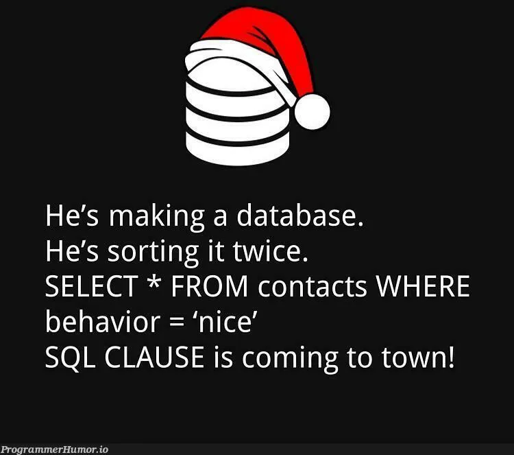
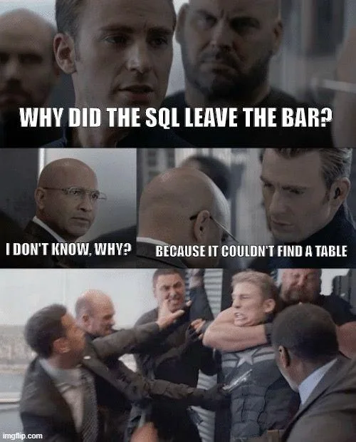
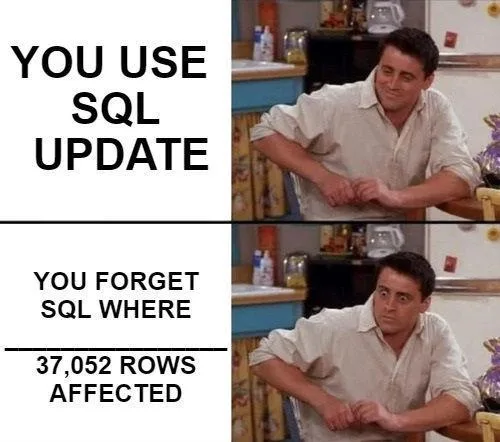
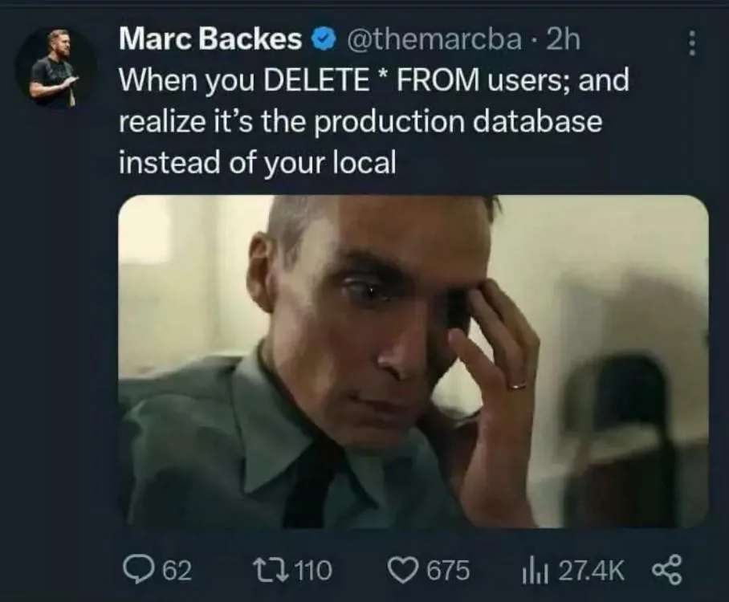
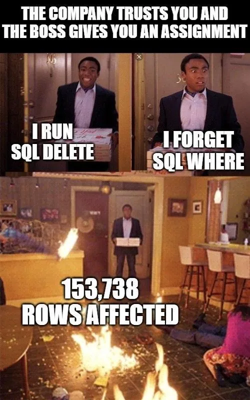

Repetition: databaser och SQL
Torsdag vecka 1 · digitalt. Vi repeterar måndag och onsdag, kopplar ihop databasrader med C#-objekt – och tränar SQL på en riktig databas.
Dagens upplägg
| Vad | Hur |
|---|---|
| Snabbquiz: måndagens begrepp och ER-diagram | Alla, i chatten |
| Repetition onsdag: från ER-diagram till tabeller | Genomgång |
| Rader och objekt – databasen jämförd med C# | Genomgång och frågor |
| Kom igång med Chinook och utforska schemat | Breakout rooms |
| SQL-verktygslådan med exempel | Gemensam kodning |
| SQL-övningar med Chinook (A1–A13) | Breakout rooms, i par |
| SQL Murder Mystery | I par |
| Reflektion och frågor inför fredag | Alla |
Ingen JOIN idag – den kommer nästa vecka. Allt vi gör idag går att lösa med en tabell i taget.
Veckans mål – var är vi?
- Förklara centrala databasbegrepp. – måndag
- Förstå och rita ett ER-diagram. – måndag
- Skapa en lokal databas med tabeller och nycklar. – onsdag
Idag repeterar vi alla tre – och lägger till det som behövs för att hämta data på ett smart sätt: WHERE, ORDER BY, TOP, DISTINCT, LIKE och NULL.
Del 1
Repetition måndag
Begrepp, nycklar och ER-diagram
Snabbquiz 1: begrepp
Skriv ditt svar i chatten först – klicka sedan för att se svaret.
1. Vad är skillnaden mellan en tabell, en rad och en kolumn?
Tabellen samlar data om en sorts sak (Customer). En rad är en sak (kunden Ada). En kolumn är en egenskap som alla rader har (Email).
2. Vad gör en primärnyckel (PK)?
Den identifierar varje rad unikt. Två rader får aldrig ha samma PK – även om de har samma namn.
3. Vad är en främmande nyckel (FK) – och vad motsvarar den i C#?
En kolumn som pekar på en PK i en annan tabell. I C# motsvarar den en referens, t.ex. order.Customer.
4. Vad betyder kardinalitet?
Antal: hur många av den ena saken som kan höra ihop med den andra – en eller många.
5. Hur löser man många till många i en databas?
Med en kopplingstabell som har två främmande nycklar, t.ex. Registrering(StudentId, KursId).
6. UML-klassdiagram eller ER-diagram – vad är skillnaden?
UML beskriver klasserna i programmet, med metoder. ER beskriver hur datan lagras – bara attribut, inget beteende.
7. Vad är ett DBMS?
Programmet som lagrar, hämtar och skyddar datan, t.ex. SQL Server, PostgreSQL eller SQLite.
8. Varför NVARCHAR och inte VARCHAR?
NVARCHAR klarar alla tecken – å, ä, ö, emoji och andra alfabet.
Snabbquiz 2: läs ER-diagrammet
%%{init: {"er": {"layoutDirection": "LR"}}}%%
erDiagram
ARTIST ||--o{ ALBUM : "har"
ALBUM ||--o{ TRACK : "innehåller"
ARTIST {
int ArtistId PK
string Name
}
ALBUM {
int AlbumId PK
string Title
int ArtistId FK
}
TRACK {
int TrackId PK
string Name
int AlbumId FK
}
1. Hur många album kan en artist ha?
Många – kråkfoten står vid ALBUM.
2. Hur många artister har ett album?
En – rak linje vid ARTIST.
3. Varför ligger ArtistId i ALBUM och inte tvärtom?
FK ligger alltid på många-sidan. Ett album har en artist – men en artist kan inte ha en kolumn för varje album.
4. Hur skulle Album se ut som C#-klass?
class Album
{
public int AlbumId { get; set; }
public string Title { get; set; }
public Artist Artist { get; set; }
public List<Track> Tracks { get; set; } = new();
}Regeln att komma ihåg: FK på många-sidan
En kund har många ordrar. Därför får varje order en kolumn som säger vilken kund den tillhör.
| Customers | |
|---|---|
| Id (PK) | Name |
| 1 | Ada |
| 2 | Bo |
| Orders | ||
|---|---|---|
| Id (PK) | OrderDate | CustomerId (FK) |
| 10 | 2026-11-02 | 1 |
| 11 | 2026-11-05 | 1 |
| 12 | 2026-11-06 | 2 |
| Relation | Var hamnar nyckeln? |
|---|---|
| 1–N (kund – ordrar) | FK i tabellen på många-sidan: Orders.CustomerId |
| m–m (student – kurser) | Ny kopplingstabell med två FK: Registrering(StudentId, KursId) |
| 1–1 (person – pass) | FK på en av sidorna, ofta den som "hör till" den andra: Pass.PersonId |
Del 2
Repetition onsdag
Från modell till tabeller i SQL Server
Från ER-diagram till CREATE TABLE
erDiagram
KLASS ||--o{ ELEV : "har"
KLASS {
int KlassId PK
string Namn
}
ELEV {
int ElevId PK
string Namn
date Fodd
int KlassId FK
}
CREATE TABLE Klass (
KlassId INT PRIMARY KEY,
Namn NVARCHAR(50) NOT NULL
);
CREATE TABLE Elev (
ElevId INT PRIMARY KEY,
Namn NVARCHAR(50) NOT NULL,
Fodd DATE,
KlassId INT NOT NULL
FOREIGN KEY REFERENCES Klass(KlassId)
);Entitet → CREATE TABLE. Attribut → kolumn med datatyp. PK → PRIMARY KEY. Relation → FOREIGN KEY REFERENCES. Skapa tabellen på en-sidan först – annars finns inget att peka på.
CREATE DATABASE och USE
CREATE DATABASE Skola;
GO
USE Skola; -- alla frågor efter det här körs mot Skola
GO| Kommando | Gör |
|---|---|
CREATE DATABASE | Skapar en ny, tom databas |
USE | Väljer vilken databas frågorna ska köras mot – samma som databasväljaren i SSMS |
GO | Inget SQL – säger åt SSMS att skicka allt ovanför som en egen omgång |
Vanligaste felet: frågan körs mot master i stället för din databas. Kolla alltid databasväljaren uppe till vänster i SSMS.
INSERT INTO
INSERT INTO Klass (KlassId, Namn)
VALUES (1, N'BED26'),
(2, N'JAVA26');
INSERT INTO Elev (ElevId, Namn, Fodd, KlassId)
VALUES (10, N'Anna', '2001-04-12', 1),
(11, N'Omar', '1999-09-30', 1),
(12, N'Lisa', NULL, 2);- Lista kolumnerna – då spelar ordningen i tabellen ingen roll.
- Text och datum inom enkla citattecken:
'2001-04-12'.N'…'för text med å, ä, ö. - Lägg in raderna på en-sidan först: klassen måste finnas innan eleven kan peka på den.
Nycklarna skyddar datan
Det här är bra fel – databasen vägrar spara data som inte hänger ihop.
Klass 99 finns inte:
INSERT INTO Elev (ElevId, Namn, KlassId) VALUES (13, N'Kim', 99);Msg 547, Level 16, State 0 The INSERT statement conflicted with the FOREIGN KEY constraint "FK__Elev__KlassId__3B75D760". The conflict occurred in database "Skola", table "dbo.Klass", column 'KlassId'.
Id 1 är redan upptaget:
INSERT INTO Klass (KlassId, Namn) VALUES (1, N'NET26');Msg 2627, Level 14, State 1 Violation of PRIMARY KEY constraint 'PK__Klass__…'. Cannot insert duplicate key in object 'dbo.Klass'. The duplicate key value is (1).
Constraints – regler som skyddar datan
En constraint är en regel på en kolumn eller tabell. Databasen vägrar spara data som bryter mot regeln – oavsett vilket program som försöker.
| Constraint | Betyder | Exempel | Ungefär som i C# |
|---|---|---|---|
PRIMARY KEY | Unikt id för varje rad – aldrig NULL | ProduktId INT PRIMARY KEY | Objektets identitet |
FOREIGN KEY | Måste peka på en rad som finns | KategoriId INT REFERENCES Kategori(KategoriId) | En referens som inte får peka på något som inte finns |
NOT NULL | Måste ha ett värde | Namn NVARCHAR(100) NOT NULL | string i stället för string? |
UNIQUE | Samma värde får inte finnas två gånger | Artikelnr NVARCHAR(20) UNIQUE | Som nycklarna i en Dictionary |
CHECK | Värdet måste uppfylla ett villkor | CHECK (Pris >= 0) | if (pris < 0) throw … |
DEFAULT | Värde som används om inget anges | Aktiv BIT DEFAULT 1 | Startvärde: public bool Aktiv { get; set; } = true; |
CREATE TABLE Produkt (
ProduktId INT PRIMARY KEY,
Artikelnr NVARCHAR(20) NOT NULL UNIQUE,
Namn NVARCHAR(100) NOT NULL,
Pris DECIMAL(10,2) NOT NULL CHECK (Pris >= 0),
Aktiv BIT NOT NULL DEFAULT 1,
KategoriId INT REFERENCES Kategori(KategoriId)
);INSERT INTO Produkt (ProduktId, Artikelnr, Namn, Pris)
VALUES (1, N'A-100', N'Kaffe', -5);Msg 547, Level 16, State 0 The INSERT statement conflicted with the CHECK constraint "CK__Produkt__Pris__4AB81AF0". The conflict occurred in database "Butik", table "dbo.Produkt", column 'Pris'.
Varför i databasen och inte bara i C#? Många program kan skriva till samma databas – en webbsida, en app, ett importskript. En constraint gäller för alla, alltid. Mer om constraints på måndag.
SELECT och WHERE
-- Allt i tabellen
SELECT * FROM Elev;
-- Bara vissa kolumner
SELECT Namn, Fodd FROM Elev;
-- Bara vissa rader
SELECT Namn
FROM Elev
WHERE KlassId = 1;| Resultat av sista frågan | |
|---|---|
| Namn | |
| Anna | |
| Omar | |
SELECT väljer kolumner. WHERE väljer rader. FROM säger vilken tabell.
Hur skulle man skriva detta i C#-kod?
List<Elev> elever = …;
// Allt i listan
var alla = elever;
// Bara vissa egenskaper
var namnOchFodd = elever.Select(e => new { e.Namn, e.Fodd });
// Bara vissa objekt
var klass1 = elever
.Where(e => e.KlassId == 1)
.Select(e => e.Namn);SELECT blir .Select(), WHERE blir .Where() och FROM Elev är listan elever.
Del 3
Rader och objekt
Du kan redan det mesta – det heter bara något annat i databasen
En rad = ett objekt
En rad i tabellen Customer i Chinook-databasen:
| CustomerId (PK) | FirstName | LastName | Company | City | Country | SupportRepId (FK) |
|---|---|---|---|---|---|---|
| 51 | Joakim | Johansson | NULL | Stockholm | Sweden | 5 |
Samma sak som ett objekt i C#:
var joakim = new Customer
{
CustomerId = 51,
FirstName = "Joakim",
LastName = "Johansson",
Company = null,
City = "Stockholm",
Country = "Sweden",
SupportRepId = 5
};En tabell = en lista med objekt
C#
List<Customer> customers = …;
// Alla kunder
customers
// Lägg till en kund
customers.Add(joakim);SQL
-- Tabellen Customer
SELECT * FROM Customer;
INSERT INTO Customer (…) VALUES (…);| Databas | C# |
|---|---|
| Tabell | Klass – och alla rader tillsammans är som en List<T> |
| Rad | Ett objekt |
| Kolumn | Egenskap (property) |
| Primärnyckel | Objektets identitet |
| Främmande nyckel | Referens till ett annat objekt – men sparad som ett id |
Skillnaden: listan försvinner när programmet stängs. Tabellen finns kvar.
Kolumnens datatyp = egenskapens typ
Ur Chinooks egna CREATE TABLE-skript:
| Kolumn i Chinook | SQL Server | C# |
|---|---|---|
Customer.CustomerId | INT NOT NULL | int |
Customer.FirstName | NVARCHAR(40) NOT NULL | string |
Customer.Company | NVARCHAR(80) (får vara NULL) | string? |
Customer.SupportRepId | INT (får vara NULL) | int? |
Track.UnitPrice | NUMERIC(10,2) NOT NULL | decimal |
Invoice.InvoiceDate | DATETIME NOT NULL | DateTime |
NOT NULL = måste ha ett värde. Utan NOT NULL får kolumnen vara tom – precis som int? och string? i C#. NUMERIC är samma sak som DECIMAL.
NULL – inget värde
NULL betyder "vet inte / finns inte". Det är inte samma sak som 0 eller tom text ''.
Joakim har inget företag – därför är Company NULL.
Man kan inte jämföra med NULL med =. Använd IS NULL eller IS NOT NULL.
C#
if (customer.Company == null) …SQL – rätt
SELECT Name
FROM Track
WHERE Composer IS NULL;SQL – ger alltid noll rader
WHERE Composer = NULLKlass → tabell
C#-klassen
class Track
{
public int TrackId { get; set; }
public string Name { get; set; }
public string? Composer { get; set; }
public int Milliseconds { get; set; }
public decimal UnitPrice { get; set; }
public Album? Album { get; set; }
}Tabellen i Chinook (förkortad)
CREATE TABLE Track (
TrackId INT NOT NULL PRIMARY KEY,
Name NVARCHAR(200) NOT NULL,
Composer NVARCHAR(220),
Milliseconds INT NOT NULL,
UnitPrice NUMERIC(10,2) NOT NULL,
AlbumId INT -- FK till Album
);Referensen Album i C# blir kolumnen AlbumId i databasen. En tabell kan inte spara ett objekt – bara id:t som pekar på det.
Främmande nyckel = referens som id
| Artist | |
|---|---|
| ArtistId (PK) | Name |
| 1 | AC/DC |
| 2 | Accept |
| 3 | Aerosmith |
| Album | ||
|---|---|---|
| AlbumId (PK) | Title | ArtistId (FK) |
| 1 | For Those About To Rock We Salute You | 1 |
| 4 | Let There Be Rock | 1 |
// C#: följ referensen direkt
album.Artist.Name // "AC/DC"
acdc.Albums // två album-- SQL: följ id:t
SELECT Name FROM Artist WHERE ArtistId = 1;
SELECT Title FROM Album WHERE ArtistId = 1;Följa en främmande nyckel för hand
Vilka album har Iron Maiden? Svaret finns i två tabeller – idag tar vi det i två steg.
Steg 1: hitta artistens id
SELECT ArtistId
FROM Artist
WHERE Name = 'Iron Maiden';
-- 90Steg 2: använd id:t i nästa fråga
SELECT Title
FROM Album
WHERE ArtistId = 90
ORDER BY Title;
-- 21 albumDet är precis så databasen "tänker": en främmande nyckel är bara ett tal som pekar på en rad i en annan tabell. Nästa vecka lär vi oss göra det i en fråga – idag räcker två.
SQL ↔ LINQ
Ni har redan skrivit frågor mot listor med LINQ. SQL gör samma sak mot tabeller.
| Vill du … | SQL | LINQ |
|---|---|---|
| Välja kolumner | SELECT Name, Country | .Select(c => new { c.Name, c.Country }) |
| Filtrera rader | WHERE Country = 'Sweden' | .Where(c => c.Country == "Sweden") |
| Sortera | ORDER BY LastName | .OrderBy(c => c.LastName) |
| Sortera fallande | ORDER BY Total DESC | .OrderByDescending(i => i.Total) |
| Ta de första | SELECT TOP 10 … | .Take(10) |
| Ta bort dubbletter | SELECT DISTINCT Country | .Select(c => c.Country).Distinct() |
| Börjar med | WHERE Name LIKE 'Love%' | .Where(t => t.Name.StartsWith("Love")) |
| Saknar värde | WHERE Company IS NULL | .Where(c => c.Company == null) |
| Finns i en lista | WHERE Country IN ('Sweden', 'Norway') | .Where(c => list.Contains(c.Country)) |
| Lägga till | INSERT INTO … | list.Add(…) |
Samma fråga i SQL och C#
De fem längsta låtarna i genren Metal (GenreId 3).
SQL
SELECT TOP 5 Name, Milliseconds
FROM Track
WHERE GenreId = 3
ORDER BY Milliseconds DESC;LINQ
var svar = tracks
.Where(t => t.GenreId == 3)
.OrderByDescending(t => t.Milliseconds)
.Take(5)
.Select(t => new { t.Name, t.Milliseconds });Lägg märke till ordningen i LINQ: först filtrera, sedan sortera, sist välja kolumner. Det är faktiskt den ordningen databasen också kör SQL-frågan i – fast man skriver SELECT först.
I vilken ordning körs en SQL-fråga?
| Skrivs | Körs | Gör |
|---|---|---|
1. SELECT | 3 | Väljer kolumner och räknar ut nya |
2. FROM | 1 | Hämtar tabellen |
3. WHERE | 2 | Filtrerar rader |
4. ORDER BY | 4 | Sorterar resultatet |
SELECT Name, Bytes / 1024.0 / 1024 AS MB
FROM Track
WHERE Bytes / 1024.0 / 1024 > 100 -- här finns inte MB än
ORDER BY MB DESC; -- här finns MBDärför kan du använda ett alias (AS MB) i ORDER BY men inte i WHERE.
Del 4
Chinook
En riktig databas att öva på
Chinook – en digital musikbutik
En exempeldatabas med artister, album, låtar, spellistor, kunder, anställda och fakturor. 275 artister, 3 503 låtar, 59 kunder och fakturor från 2021–2025.
- Ladda ned
Chinook_SqlServer.sqlfrån senaste releasen på github.com/lerocha/chinook-database. - Öppna filen i SSMS och kör hela skriptet. Obs: det tar bort en befintlig databas som heter Chinook.
- Välj Chinook i databasväljaren, eller kör
USE Chinook;
Kör du Mac? Använd VS Code mot din SQL Server. Id-kolumnerna saknar IDENTITY – vid INSERT anger du id själv.
Chinook: musiken
%%{init: {"er": {"layoutDirection": "LR"}}}%%
erDiagram
ARTIST ||--o{ ALBUM : "har"
ALBUM ||--o{ TRACK : "innehåller"
GENRE ||--o{ TRACK : "har"
MEDIATYPE ||--o{ TRACK : "har"
TRACK ||--o{ PLAYLISTTRACK : "finns i"
PLAYLIST ||--o{ PLAYLISTTRACK : "innehåller"
ARTIST {
int ArtistId PK
string Name
}
ALBUM {
int AlbumId PK
string Title
int ArtistId FK
}
GENRE {
int GenreId PK
string Name
}
MEDIATYPE {
int MediaTypeId PK
string Name
}
TRACK {
int TrackId PK
string Name
string Composer
int Milliseconds
decimal UnitPrice
int AlbumId FK
int GenreId FK
int MediaTypeId FK
}
PLAYLISTTRACK {
int PlaylistId FK
int TrackId FK
}
PLAYLIST {
int PlaylistId PK
string Name
}
Chinook: försäljningen
%%{init: {"er": {"layoutDirection": "LR"}}}%%
erDiagram
EMPLOYEE ||--o{ EMPLOYEE : "är chef för"
EMPLOYEE ||--o{ CUSTOMER : "är kontakt för"
CUSTOMER ||--o{ INVOICE : "har"
INVOICE ||--o{ INVOICELINE : "har"
TRACK ||--o{ INVOICELINE : "säljs i"
EMPLOYEE {
int EmployeeId PK
string FirstName
string LastName
string Title
int ReportsTo FK
}
CUSTOMER {
int CustomerId PK
string FirstName
string LastName
string Company
string Country
int SupportRepId FK
}
INVOICE {
int InvoiceId PK
datetime InvoiceDate
decimal Total
int CustomerId FK
}
INVOICELINE {
int InvoiceLineId PK
decimal UnitPrice
int Quantity
int InvoiceId FK
int TrackId FK
}
TRACK {
int TrackId PK
string Name
}
Employee → Employee är en rekursiv relation (Recursive Relationship), även kallad självrefererande relation (Self-referencing Relationship) eller unär relation (Unary Relationship). Kolumnen ReportsTo pekar på EmployeeId i samma tabell: en anställd har en chef – som också är en anställd.
Breakout: utforska Chinook
Installera databasen och öppna Tables → Keys i Object Explorer. Diskutera i gruppen:
1. Hur många tabeller finns det i Chinook?
11: Album, Artist, Customer, Employee, Genre, Invoice, InvoiceLine, MediaType, Playlist, PlaylistTrack och Track.
2. Vilken tabell är en kopplingstabell för många till många?
PlaylistTrack – en spellista har många låtar, en låt finns i många spellistor.
3. InvoiceLine kopplar också ihop två tabeller. Vilka – och vad har den mer?
Invoice och Track. Den har egna attribut: UnitPrice och Quantity – som Betyg i skolexemplet.
4. Employee.ReportsTo pekar på … vad?
På Employee själv. En anställd har en chef, som också är en anställd. I C#: public Employee? Manager.
5. Vilka kolumner i Customer får vara NULL?
Allt utom CustomerId, FirstName, LastName och Email. Kolla under Columns i Object Explorer.
6. Skriv C#-klassen för Album.
int AlbumId, string Title, Artist Artist och List<Track> Tracks.
7. Varför har Invoice egna adresskolumner i stället för att bara använda kundens?
Fakturan ska visa adressen när köpet gjordes – även om kunden flyttar senare.
Del 5
SQL-verktygslådan
Allt du behöver för dagens övningar
Verktygslådan på en bild
| Verktyg | Exempel | Gör |
|---|---|---|
SELECT / * | SELECT Name, Composer | Väljer kolumner – * = alla |
AS | Milliseconds / 1000 AS Sekunder | Döper en kolumn |
WHERE | WHERE Country = 'Canada' | Filtrerar rader |
AND / OR / NOT | WHERE GenreId = 1 AND UnitPrice > 1 | Kombinerar villkor |
<> | WHERE Country <> 'USA' | Inte lika med |
IN | WHERE Name IN ('Rock', 'Jazz') | Något av flera värden |
BETWEEN | WHERE Total BETWEEN 5 AND 8 | Inom ett intervall, gränserna inräknade |
LIKE | WHERE Name LIKE 'The %' | Mönster: % = vad som helst, _ = ett tecken |
IS NULL | WHERE Composer IS NULL | Saknar värde |
ORDER BY | ORDER BY Country, LastName DESC | Sorterar – ASC (standard) eller DESC |
TOP | SELECT TOP 5 … | Bara de första raderna |
DISTINCT | SELECT DISTINCT Title | Tar bort dubbletter |
YEAR() | WHERE YEAR(HireDate) = 2003 | Plockar ut året ur ett datum |
Exempel: räkna och döpa kolumner
SELECT Name,
Bytes / 1024.0 / 1024 AS MB
FROM Track
WHERE AlbumId = 1;| Name | MB |
|---|---|
| For Those About To Rock (We Salute You) | 10.65… |
| Put The Finger On You | 6.40… |
| … | … |
Heltalsfällan: Bytes / 1024 är heltal delat med heltal – då kapas decimalerna, precis som 7 / 2 blir 3 i C#. Skriv 1024.0 så blir svaret ett decimaltal.
Exempel: ORDER BY, TOP och DISTINCT
De tre senast anställda
SELECT TOP 3 FirstName, LastName, HireDate
FROM Employee
ORDER BY HireDate DESC;| FirstName | LastName | HireDate |
|---|---|---|
| Laura | Callahan | 2004-03-04 |
| Robert | King | 2004-01-02 |
| Steve | Johnson | 2003-10-17 |
Vilka titlar finns bland de anställda?
SELECT DISTINCT Title
FROM Employee
ORDER BY Title;| Title |
|---|
| General Manager |
| IT Manager |
| IT Staff |
| Sales Manager |
| Sales Support Agent |
TOP utan ORDER BY ger "några" rader – inte de största eller minsta. Sortera alltid först.
Exempel: datum
Med YEAR()
SELECT FirstName, HireDate
FROM Employee
WHERE YEAR(HireDate) = 2003;Med ett intervall
SELECT FirstName, HireDate
FROM Employee
WHERE HireDate >= '2003-01-01'
AND HireDate < '2004-01-01';Båda ger Margaret, Steve och Michael. Skriv datum som text i formatet 'ÅÅÅÅ-MM-DD'.
Varför < '2004-01-01' och inte <= '2003-12-31'? En DATETIME har också klockslag – '2003-12-31 15:00' är större än '2003-12-31' och skulle missas.
Exempel: INSERT i Chinook
Id räknas inte upp automatiskt i Chinook. Ta reda på det högsta id:t först:
1. Vilket är högsta id?
SELECT TOP 1 ArtistId
FROM Artist
ORDER BY ArtistId DESC;
-- 2752. Lägg till med nästa id
INSERT INTO Artist (ArtistId, Name)
VALUES (276, N'Kent');
-- 3. Kontrollera
SELECT * FROM Artist
WHERE ArtistId = 276;Kör du samma INSERT två gånger får du felet om duplicate key – primärnyckeln skyddar dig. På onsdag nästa vecka kommer UPDATE och DELETE.
Vanliga fel
| Du skriver | Det blir | Rätta till |
|---|---|---|
WHERE Country = "Sweden" | Invalid column name 'Sweden' | Enkla citattecken: 'Sweden' |
SELECT * FROM Customer | Invalid object name 'Customer' | Fel databas – kör USE Chinook; |
WHERE Company = NULL | Noll rader, inget fel | IS NULL |
Milliseconds / 60000 | Hela minuter, decimalerna försvinner | 60000.0 |
'Let's Get It Up' | Unclosed quotation mark after the character string … | Dubbla apostrofen: 'Let''s Get It Up' |
VALUES (26, 'Göteborgsrock') | Risk för konstiga tecken | N'Göteborgsrock' |
ORDER BY … före WHERE … | Incorrect syntax near the keyword 'WHERE' | Ordningen: SELECT – FROM – WHERE – ORDER BY |
SQL Server bryr sig oftast inte om stora eller små bokstäver i texten: 'sweden' hittar Sweden. Det beror på databasens inställning (collation).
SQL-övningar med Chinook – vecka 1
- Visa alla genrer.
- Visa förnamn, efternamn och land för alla kunder.
- Visa alla kunder som bor i Sverige.
- Visa alla kunder som inte har angett något företag.
- Visa kunder i Sverige, Norge, Danmark och Finland, sorterade på land och sedan efternamn.
- Visa namn och längd i minuter för alla låtar som är längre än tio minuter.
- Visa de tio längsta låtarna.
- Visa alla låtar vars namn börjar med ordet Love.
- Visa alla fakturor från 2023.
- Visa fakturor där totalsumman ligger mellan 10 och 15, dyraste först.
- Vilka länder har kunder? Varje land en gång, i bokstavsordning.
- Vilken anställd rapporterar inte till någon?
- Lägg till en ny genre som heter Svensk pop.
Uppgifterna heter A1–A13 i Christoffers övning på Learnpoint. Längden lagras i millisekunder.
Fastnat? Vilket verktyg behövs?
A3 WHERE · A4 IS NULL · A5 IN + ORDER BY med två kolumner · A6 räkna och döpa, se upp för heltalsfällan · A7 TOP + ORDER BY … DESC · A8 LIKE – tänk på mellanslaget · A9 YEAR() eller intervall · A10 BETWEEN · A11 DISTINCT · A12 IS NULL på rätt kolumn · A13 hitta högsta id först
Klar? SQL Murder Mystery
Det har skett ett mord i SQL City den 15 januari 2018.
Lös det – med SQL.
Gå till mystery.knightlab.com. Allt körs i webbläsaren – inget att installera. Börja med att hämta brottsplatsrapporten från polisens databas.
Jobba i par. Skriv ner varje ledtråd du hittar – och vilken fråga som gav den. Ni kommer att behöva id:n från en fråga i nästa.
Murder Mystery: tips
| Tips | Varför |
|---|---|
| Lös det utan JOIN: kopiera id:n från ett svar till nästa fråga | Precis som Iron Maiden-exemplet – följ nycklarna för hand |
| Klicka på länken till schemat (ER-diagrammet) på sidan | Då ser du vilka kolumner som pekar på vilka tabeller |
| Databasen är SQLite, inte SQL Server | Det mesta är likadant – men några saker skiljer |
LIMIT 1 i slutet i stället för TOP 1 | SQLite har inte TOP |
Datum är heltal, t.ex. 20180115 | Jämför med tal – inga citattecken, ingen YEAR() |
LIKE och ORDER BY … DESC kommer väl till pass | Ett vittne bor "i sista huset på gatan" … |
Hittat mördaren? Kolla svaret med frågan i rutan Check your solution längst ner på sidan. Det finns en bonusfråga efter det …
Reflektion
- Förklara med C#-ord vad en rad, en kolumn och en främmande nyckel är.
- Vilken av dagens övningar var svårast – och varför?
- Vilket SQL-fel stötte du på idag, och hur löste du det?
- En fråga du vill ha svar på imorgon.
Sammanfattning
- En tabell är som en klass, en rad är ett objekt och en kolumn är en egenskap.
- PK är radens identitet. FK är en referens – sparad som ett id, alltid på många-sidan.
NULL= inget värde. Kolumner utanNOT NULLär somint?ochstring?. Jämför medIS NULL.SELECTväljer kolumner,WHEREväljer rader,ORDER BYsorterar,TOPochDISTINCTbegränsar.- SQL och LINQ gör samma sak:
WHERE=.Where(),ORDER BY=.OrderBy(),TOP=.Take(). - Data i flera tabeller? Idag: följ nyckeln i två frågor. Nästa vecka: ett smidigare sätt.
Roadmap: hela kursen
Vecka 1 · v.48
Modell och tabeller
Du är här- Relationsdatabaser och begrepp
- ER-diagram och kardinalitet
- PK, FK och datatyper ↔ C#
CREATE,INSERTSELECT,WHERE,ORDER BY
Vecka 2 · v.49
Kvalitet och CRUD
- Normalisering 1NF–3NF
- Funktionellt beroende
- Constraints:
NOT NULL,UNIQUE,CHECK,DEFAULT UPDATE,DELETEGROUP BY,HAVINGJOIN
Vecka 3 · v.50
Säkerhet
- Authentication och authorization
- Databasroller
- Minsta behörighet
- SQL-injektion
- Parameteriserade frågor
Vecka 4 · v.51
C# och EF Core
- Introduktion till EF Core
- Koppla databas till konsolapp
- CRUD från C#
- Individuell inlämningsuppgift
- Muntlig delredovisning av ER-diagram
Vecka 5 · v.53
Projekt
- Projektarbete
- Allt ihop: modell, SQL, säkerhet och EF Core
Varje fredag: repetition, reflektion, quiz och kodgranskning.






Piltangenterna byter bild ·